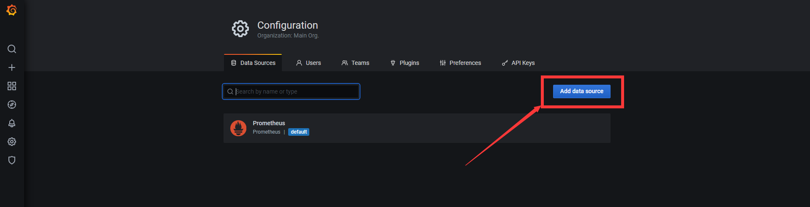

入门
数据源(Data Source)
数据源是为Grafana展示数据提供的数据仓库
Grafana支持的数据源
- AWS CloudWatch
- Azure Monitor
- Elasticsearch
- Google Cloud Monitoring
- Graphite
- InfluxDB
- Loki
- Microsoft SQL Server (MSSQL)
- MySQL
- OpenTSDB
- PostgreSQL
- Prometheus
- Jaeger
- Zipkin
- Tempo
- Testdata
添加数据源示例

最后点击 (Save & Test) 即可添加成功
仪表板(Dashboard)
仪表板由一个或多个面板组合而成, 形成一个大的仪表板, 用于展示各种信息
仪表板里面的面板可以随意的拖动, 缩放和放大, 可操作性很高.
拖动示例
添加仪表板示例
可以添加一个空的面板, 也可以添加一个行(用于管理一小组面板), 当粘贴板上有复制的面板时, 还会有一个粘贴面板选项.
面板(Panel)
面板是仪表板里面的一个个小组件, 用于展示一个或多个信息.